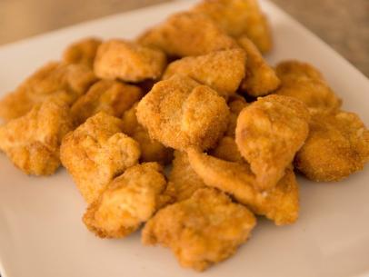

Odin Project
Home
Homemade McNuggets

Mom's recipe on McNuggets at home.
Ingredients:
- 3 chicken fillets, boneless, skin removed and diced
- 1 1/2 tsp salt
- 2 large eggs
- 1 1/2 cups corn starch, divided
- 1 cup water
- 1 tbsp onion powder
- 1 tbsp garlic powder
- 2 tbsp yellow mustard
- 1 tsp ground black pepper
- 1 cup all-purpose flour
Cooking Steps:
- Place the chicken in a food processor with the salt and one egg. Blend until it forms a paste-like consistency.
- In a shallow bowl or container, place the corn starch. Using wet hands, take a handful of blended chicken and shape into a nugget. Cover the nugget with corn starch, shake off the excess and place on a parchment paper-lined baking sheet. Finish shaping and coating the nuggets before moving on to the next step.
- In a large bowl, whisk together the water, one egg, mustard, garlic and onion powder, ground pepper and all-purpose flour. You should have a thick but runny batter. Place one nugget at a time in the batter and place it back onto the lined baking sheet.
- Place the tray in the freezer and allow them to freeze for 1 hour.
- Heat your oil to 350 degrees Fahrenheit. Deep fry the first batch for 5 minutes. Allow the chicken nuggets to drain on paper towel for 3-4 minutes. Deep fry the same batch again for 5 minutes. This ensures that the chicken cooks all the way through without getting too dark.
- Serve them nuggets and Feast!